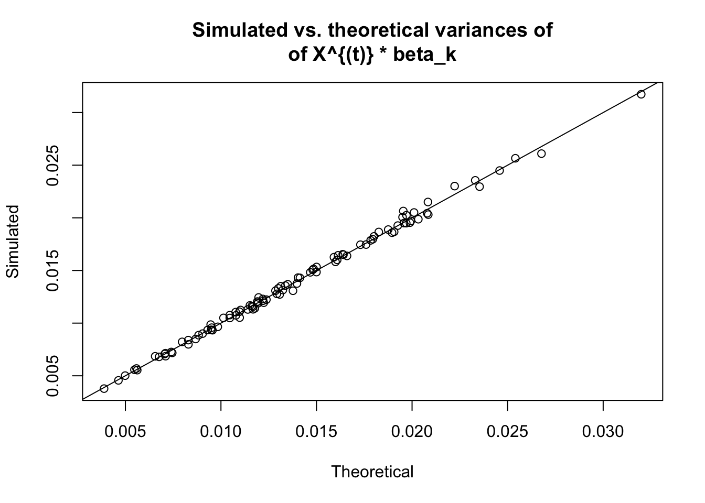
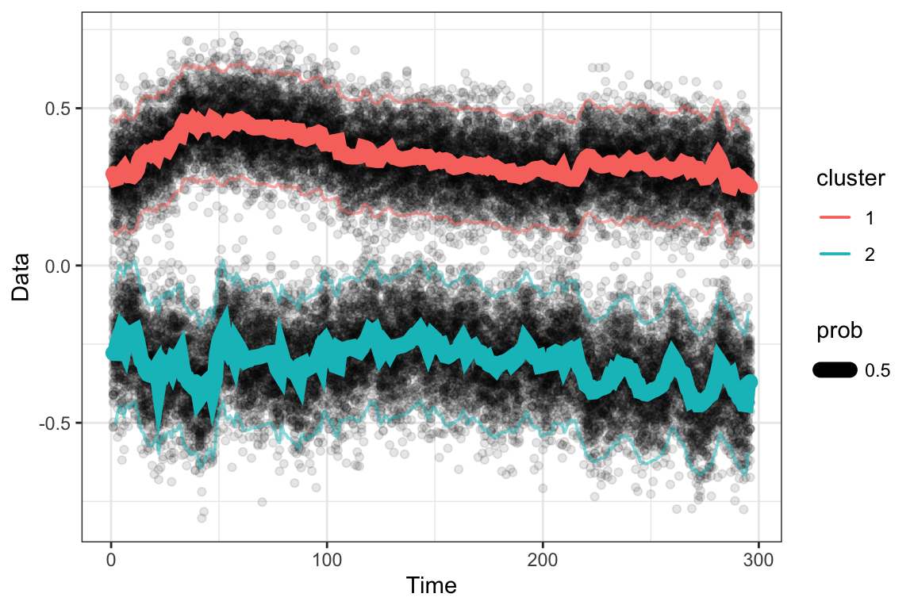

6 Simulations
Refer back to the data generation in @ref{syntheticdata}. We will be top-censoring the data at 0.5. Before censoring, this is what the data looks like.
## Load the "original" model
orig_model = readRDS(file=file.path("~/repos/flowcut/inst/output", "orig_model.RDS"))
## Generate data
set.seed(100)
isignal = 8
new_model = make_model(orig_model, isignal)
ylist = gen_1d(new_model, nt = 100)
flowtrend::plot_1d(ylist, obj = new_model)
After censoring, this is it.
## Censor it
ylist = lapply(ylist, function(y){
y = pmin(y, 0.5)
})
flowtrend::plot_1d(ylist, obj = new_model)
We need to specify a few things (1) like the censoring limits Cbox and (2)
countslist before running the MCMC.
## Form the censoring "box"
Cbox = rbind(c(-Inf, 0.5))
## Counts are all equal for now
countslist = lapply(ylist, function(y){ rep(1, nrow(y)) })
## Save the metadata
datobj = list(ylist=ylist, countslist=countslist, Cbox=Cbox, X=orig_model$X)
saveRDS(datobj,
file.path("~/repos/flowcut/inst/output",
paste0("isignal-", isignal, "-datobj.RDS")))We also need some prior elicitation to prevent the cluster means from changing too much across time.
(code copy-pasted as-is for now, not meant to be run)
##############################
###### prior elicitation
##############################
d <- 3
p <- 39
X <- t(readRDS("pre-censor-datobj.RDS")$X)
nu0=d
nu1=p+1
S0=diag(d)
S1=diag(p+1)
inv.XTX <- solve(tcrossprod(X))
dim(inv.XTX)
## Sig.ell <- rinvwishart(1,nu0+d,S0)[,,1]
## gg <- 1
## beta.ell <- rmatnorm(M = matrix(0,d,p),
## U = Sig.ell,
## V = inv.XTX*gg,
## tol = .Machine$double.eps^0.5)
## mean.vec <- apply(beta.ell%*% X,1,mean)
## l2.norm <- mean(apply(beta.ell%*% X,2,function(xx)
## crossprod(xx-mean.vec)))
## hist(apply(beta.ell%*% X,2,function(xx)
## crossprod(xx-mean.vec)),breaks = "FD")
ball.deviance <- function(gg,rr,X, Nmc=5000,
nu0=d, nu1=p+1,
S0=diag(d), S1=diag(p+1),
simple= TRUE){
inv.XTX <- solve(tcrossprod(X))
ms.deviance <- rep(NA,Nmc)
Sig.ell <- rinvwishart(Nmc,nu0+d,S0)
beta.ell <- apply(Sig.ell,3,function(xx)
as.matrix(rmatnorm(M = matrix(0,d,p),
U = xx,
V = inv.XTX*gg,
tol = .Machine$double.eps^0.5)),
simplify = FALSE)
xb <- lapply(beta.ell, function(bb) bb%*% X)
mean.vec <- lapply(xb, function(bb)
apply(bb,1,mean))
ms.deviance <- mapply(function(xx,mm){
mean(apply(xx,2,function(cols) crossprod(cols-mm)))
}, xx=xb,mm=mean.vec)
prob <- mean(ms.deviance > rr^2)
if(simple){
return(list(gg=gg,rr=rr,prob=prob))
}else{
return(list(gg = gg, rr = rr,
prob=prob,
msd = ms.deviance))
}
}
gglist <- as.list(1:100/100)
plist <- mclapply(gglist,function(gg)
ball.deviance(gg,0.5,X,Nmc=1e4)$prob,
mc.cores = min(n.cores, length(gglist)))
plot(gglist,plist,type = "l")
abline(h=0.05,lwd=2,col = "red")
abline(h=0.01,lwd=2,col = "red")
lines(gglist,lowess(plist~gglist,f=0.3)$y,lwd=2,col="blue")
hist(ball.deviance(0.01,0.5,X)$msd, breaks = "FD")
hist(ball.deviance(0.1,0.5,X)$msd, breaks = "FD")
hist(ball.deviance(0.2,0.5,X)$msd, breaks = "FD")
hist(ball.deviance(0.5,0.5,X)$msd, breaks = "FD")
hist(ball.deviance(1,0.5,X)$msd, breaks = "FD")
hist(ball.deviance(2,0.5,X)$msd, breaks = "FD")Next, we run the MCMC.
## Run the MCMC
Nmc <- 1e3 * 5
Nburn <- 500
Gibbs.res <- run.Gibbs.fast(ylist = datobj$ylist,
countslist = datobj$countslist,
numclust = 2,
Nmc = Nmc, Nburn = Nburn,
gg = 0.1,
X = t(datobj$X),
Cbox = datobj$Cbox, verbose = TRUE)
## Save the results
saveRDS(Gibbs.res,
file.path("~/repos/flowcut/inst/output",
paste0("isignal-", isignal, "-gibbs.RDS")))